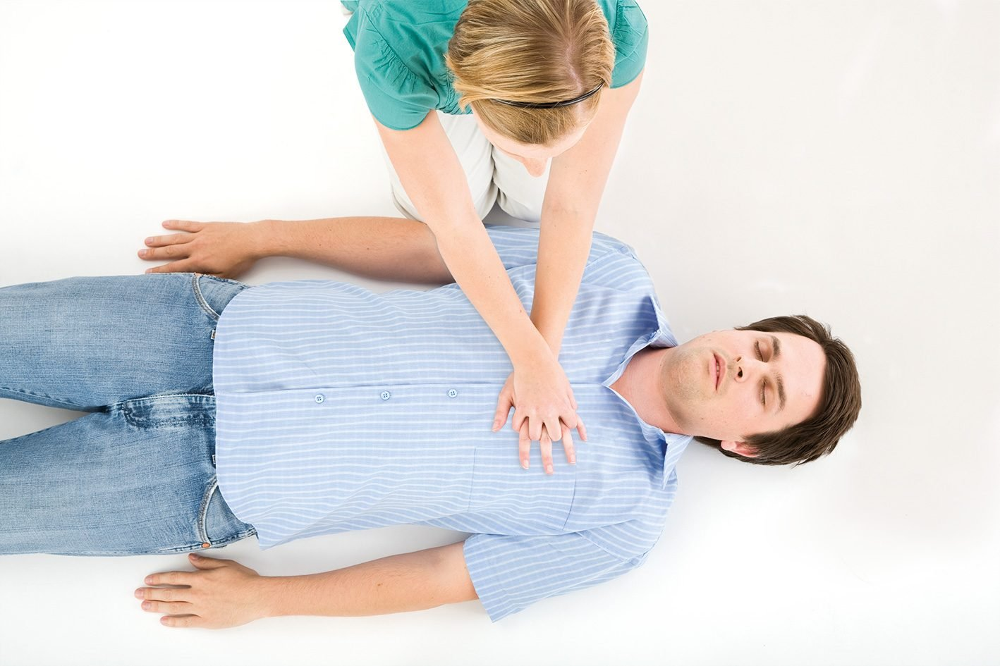

emergency
Be Prepared
Preparing for Power Outages
Emergency Kit:
- a. Non-perishable food: Stock up on canned goods, dried fruits, nuts, and more.
- b. Water: Store at least one gallon per person per day for at least three days.
- c. Flashlights and extra batteries.
- d. Portable chargers: Ensure they're charged and ready.
Backup Power:
- a. Consider a generator and learn its safe use.
- b. Solar chargers for small devices.
Safety Measures:
- a. Keep a list of emergency contacts.
- b. Learn manual garage door opening.
- c. Unplug equipment to avoid power surges.
Preparing for Water Shortages
Water Storage:
- a. Bottled water and large containers.
- b. Bathtub storage for non-drinking purposes.

Conservation Tips:
- a. Fix any leaks promptly.
- b. Use water-saving appliances.
- c. Avoid watering lawns during peak hours.
Preparing for Cybersecurity Threats
Digital Safety:
- a. Keep software updated.
- b. Use strong, unique passwords for each account.
- c. Enable two-factor authentication where available.
Backups:
- a. Regularly backup important files to an external drive.
- b. Consider cloud storage for critical documents.
Education:
- a. Stay informed about the latest threats.
- b. Attend cybersecurity workshops or webinars.
Preparing for Medical Emergencies
First Aid Kit:
- a. Bandages, antiseptics, tweezers, and more.
- b. Prescribed medications and general over-the-counter remedies.

Emergency Contacts:
- a. Have a list of emergency numbers including family doctors.
- b. Know the quickest route to the nearest hospital.
Training:
- a. Learn CPR and basic first aid procedures.
- b. Attend health and safety workshops.

Tornadoes
- Information:
- Use a NOAA weather radio or a reliable app.
- A tornado watch means that conditions are right for a tornado to possibly form.
- A tornado warning means that a tornado has been spotted and you should seek shelter.
- Protection:
- Pick a secure spot in your home to go during a tornado (preferably a basement or interior room).
- Conduct tornado drills regularly.
- Emergency Supplies:
- Store helmets, sturdy shoes, and a flashlight in your shelter.
- Add a whistle and a first-aid kit.
- Keep your emergency kit ready.
Vehicle Preparedness
Why Vehicle Preparedness is Important:
- a. Safety First: Minimize risks and protect passengers.
- b. Peace of Mind: Drive with confidence.
- c. Save Time and Money: Prevent minor issues from escalating.

Basic Vehicle Maintenance:
- a. Schedule regular check-ups.
- b. Monitor tire pressure and tread.
- c. Check brakes and fluids.
- d. Ensure battery is charged.
- e. Regularly inspect all lights.
Emergency Car Kit
Essential Items:
- a. First Aid Kit with basic supplies.
- b. Water and non-perishable food.
- c. Flashlight with extra batteries.
Additional Supplies:
- a. Blanket or warm clothing.
- b. Multi-tool or Swiss Army Knife.
- c. Jumper cables and tow rope.
- d. Road flares or warning triangles.
- e. Shovel and windshield scraper.
Further Tips:
- a. Adjust kit based on season.
- b. Check and refresh kit regularly.
Additional Tips
- Seasonal Adjustments:
- Include items like tire chains during winter.
- Add cat litter for added traction.
- Regular Checks:
- Review emergency kit every few months.
- Replace expired items.
- Family-Specific Needs:
- Include pet food, diapers, or baby food when traveling with family.
- Stay Informed:
- Always be aware of weather and road conditions.
- Practice safe driving habits.